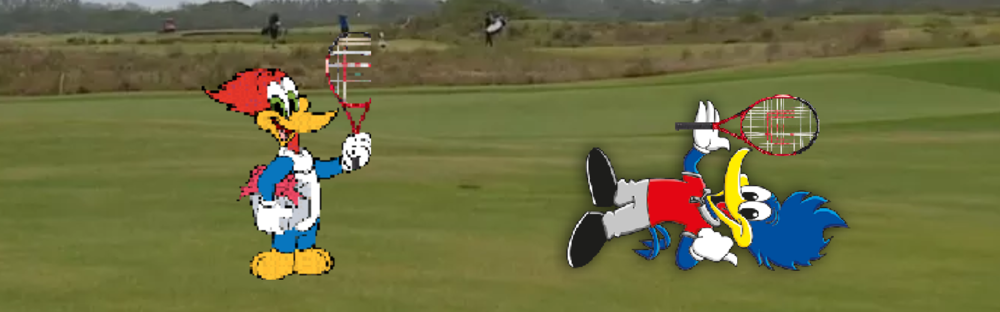

Atenção! Esta história contém erros propositais, só pela zoeira :). Portanto, se encontrar muitos erros de ortografia, coesão ou coerência, são intencionais.
Depois de uma longa luta contra o Pica-pau fake, Pica-pau decide ir além, seu objetivo agora é lutar contra o Leôncio, o rei da bolinha de golfe, em uma batalha épica. Mas para isso, Pica-pau precisa primeiro treinar, então ele vai até...

Pica-pau chega até o Culto à Ciência através de uma maquina do tempo, e encontra Santos Dumont, e o Faustão que também usou uma máquina por motivos desconhecidos. Santos Dumont depois de uma conversa com Pica-pau, sugere ideias para conseguir derrotar Leôncio com facilidade, que são...

Pica-pau chega até Nova York e encontra o Celso Portiolli, Pica-pau fica decepcionado, já que Celso Portiolli não é nada útil para ele. Mas Celso oferece seu avião particular para ir lugares incriveis em busca de utensílios, como..

Pica-Pau aceita a proposta de Santos Dumont, e então volta até os tempos atuais e constroi seu avião, e ele usa para ir até a arena do Leôncio, mas ele precisa decidir por onde passar com o avião...
.png)
Pica-Pau pega os ovos da coleção de Faustão, por mais que Faustão ainda não tenha a confiança de que eles vão ficar bem, e ele volta aos tempos atuais. Depois de uma longa e cansativa caminhada, Pica-Pau chega até a arena de Leôncio e então ele decide...
.png)
O pica-pau bateu na porta de Ednaldo Pereira e já foi logo pedindo um superpoder pra derrotar o Leôncio. O Ednaldo deu uma olhada pra ele e falou: 'Cara, você é muito fraco pra isso!' Mas, pra não deixar o bicho muito triste, ofereceu dois poderes mais simples.
.png)
O Pica-pau foi pedir ajuda ao Inspetor Bugiganga. Ele disse que precisava derrotar Leôncio e para isso queria uma bugiganga bem legal para vencer. O Bugiganga pensou um pouquinho e mostrou duas coisas muito legais para o Pica-pau escolher...
.png)
Pica-Pau, enquanto voava, foi atingido por uma forte corrente de vento que o fez voltar ao ínicio, despedaçando o avião
 (1).png)
Pica-Pau consegue superar as montanhas, mesmo com algumas turbulências. Ao avistar Leôncio em sua arena, ele toma a decisão de...
.png)
Os ovos não fazem nenhum efeito, e Leôncio devolve atirando uma super bolinha, derrotando Pica-Pau
.png)
A fúria do Pica-Pau resulta na destruição dos ovos de Faustão. Faustão aparece e diz que você destruiu seus ovos. Pica-Pau pede ajuda para derrotar Leôncio, mas Faustão recusa por causa da destruição dos ovos. Em vez disso, ele propõe um quiz: ‘Um país da Europa, no passado invadiu o Brasil, terra das flores e moinhos de vento, e tirou o Brasil da Copa”
.png)
Pica-Pau ganha o poder da onisciência e, de repente, tudo faz sentido. Mas, espera aí… Tudo isso é apenas um sonho? Pica-Pau acorda e percebe que estava sendo louco o tempo todo!
.png)
Pica-Pau decide ir até a arena de Leôncio, mas acaba se teleportando tanto que volta no tempo até quando era bebê.
.png)
Pica-Pau usa o tapete voador, porém acaba caindo dele enquanto voava, oof
.png)
Pica-pau consegue ir diretamente até o Leôncio sem nenhum problema e começa a enfrentar leoncio. Haha Pica-pau, você não tem chance comigo, eu vou te derrotar sem nenhum esforço, então ele decide...
.png)
Pica-Pau erra todas as bolinhas e Leôncio acaba percebendo, rebatendo de volta uma bolinha que derrota Pica-Pau
.png)
Pica-Pau pousa e vai até Leôncio para fazerem uma batalha épica de bolinhas de golfe
.png)
ERROU!! Faustão te abandona, e rapidamente Leôncio te ataca com uma raquetada que te envia de volta ao início.
.png)
Wow.. VOCÊ ACERTOU!! Faustão, impressionado com sua resposta correta, perdoa você pela destruição dos ovos. Juntos, você e Faustão decidem unir forças para acabar com a raça do Leôncio.
Desistir não é uma opção agora
.png)
Pica-Pau ataca Leôncio, mas ele agarra a bolinha e devolve ao remetente, derrotando o Pica-Pau
.png)
Pica-Pau grita: “This is the greatest plan...”, e do nada o Celso Portiolli chega e destrói o Leôncio com seu aviao particular, e Pica-Pau leva a vitória!